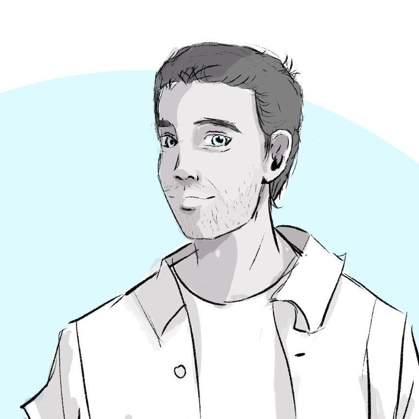
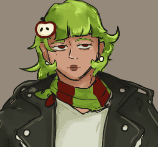

Alejandro
Alejandro
Je suis là pour ramasser leurs merdes. Dans tous les sens du terme.
Informations connues
Alejandro parle aussi peu qu’il dort. Il est une des rares goules Toréador, et c’est donc à lui qu’incombe beaucoup de responsabilités. Bien sûr, les plus importantes d’entre elles sont le soin des chiens d’Angelos, et par alliance, des chiens de Louiza.
Malgré les apparences, il aime faire la fête et peut se montrer très sociable. Il aidait même Angelos et l’ancienne domitor de Dimitri à trouver des calices en soirée, aidé par le fait qu’il est très charismatique.
Certaines mauvaises langues diraient qu’il n’est à sa place qu’à cause de son physique, et Angelos lui-même ne nierait pas qu’il aime les beaux accessoires, mais Alejandro est aussi vif d’esprit, discret, rapide et très efficace.
Histoire
Le jeune homme d’origine hispano-turque rêvait de devenir tatoueur. Pour boucler les fins de mois, il était aussi pet sitter, et c’est ainsi qu’il s’est retrouvé à s’occuper des chiens d’Angelos, qui a décidé unilatéralement qu’il ne pourrait pas se passer de ses services.
Enfin, officiellement, c’était surtout pour les besoins du clan : Ines venait d’être étreinte, et une place de goule était de fait devenue vacante. Alejandro a donc beaucoup appris et collaboré avec elle, en tant que graphiste et conseiller en communication visuelle.
Relations
Domitor
-
 Angelos
Angelos
- Il a beau lui en vouloir, Alejandro ne peut pas s’empêcher d’adorer Angelos, comme on adore une star.
-

Dimitri - Il y a 15 ans, on pouvait les voir danser la nuit et « boire des coups » avec leurs domitors. Depuis le départ de Hadla, ils ne traînent plus vraiment ensemble, sans que leur amitié n’ait vraiment disparu.
-

Ines - Après l’étreinte d’Ines, Alejandro a en quelque sorte pris sa succession. C’est une sorte de collègue, de mentor et parfois de pote, mais Alejandro a totalement conscience qu’elle est sa supérieure, aussi bien hiérarchiquement que sur la chaîne alimentaire.
-
 Louiza
Louiza
- C’est évident pour tout le monde qu’Alejandro la jalouse, mais il est difficile même pour lui de savoir ce qu’il pense réellement d’elle, tant il essaie de ravaler ses sentiments à son sujet.
Trivia
- Du fait de sa polychromie, Alejandro a une vision trouble via son œil gauche et a du mal à évaluer les distances. Il est donc nul au tennis.
- Sa grand-mère espagnole a essayé de l’exorciser lorsqu’il était enfant, ce qui alimente depuis son rejet des religions.
- C’est lui qui a réalisé le logo du garage Car’at.